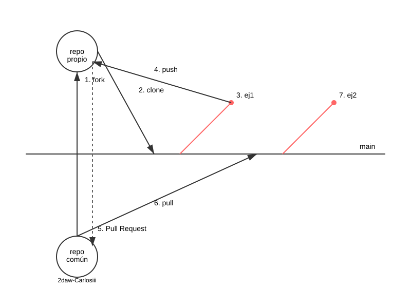

Desarrollo Web en Entorno Servidor · Bloque 5 · RA5
y desarrollo colaborativo con GitHub
Empezamos a reconstruir marcapersonalFP con un framework
Librerías y convenciones que automatizan el trabajo, a cambio de seguir sus reglas.
public/index.php, y las rutas deciden quién atiende cada petición.app/; HTML en vistas Blade (MVC, en 5.8).| Un script por página | Rutas y controladores | 5.3, 5.5 |
|---|---|---|
require_once | Autoload de Composer | 5.2 |
session_start() | Lo hace el framework | 5.2 |
<?php if ?>, e() | Blade: @if, {{ }} | 5.4 |
ValidadorCurriculo | $request->validate(), Form Request | 5.6 |
value="<?= e(…) ?>" | old('alumno') | 5.6 |
|---|---|---|
Flash + unset() | redirect()->with() | 5.6 |
Autenticador | Auth::attempt(), con Breeze | 5.7 |
exigirLogin() | Middleware auth | 5.7 |
Las clases de src/ | Clases en app/ y un repositorio | 5.8 |
Eloquent, la tabla curriculos y los roles: Bloques 6 y 7.
2DAW-CarlosIII/marcapersonalfp2627. En tu clon, el remoto upstream.<tu-usuario>/marcapersonalfp2627. El remoto origin.~/Documentos/laravel/marcapersonalfp, donde trabajas.Subes tus ramas a tu fork y propones los cambios al base con un pull request.

Una vez por curso, el profesorado. Sin PHP en la VM, Composer va en un contenedor de usar y tirar:
cd ~/Documentos/laravel
docker run -it --rm -v "$PWD:/usr/src/app" thecodingmachine/php:8.4-v4-slim-cli \
composer create-project laravel/laravel:^13.0 marcapersonalfp
Después, git init y push a 2DAW-CarlosIII/marcapersonalfp2627.
El .gitignore deja fuera vendor/, .env y la base SQLite: tú los regeneras en el paso 4.
Botón Fork en el repositorio base. Después, en la VM (allí están tus claves SSH):
cd ~/Documentos/laravel
git clone git@github.com:<tu-usuario>/marcapersonalfp2627.git marcapersonalfp
cd marcapersonalfp
git remote add upstream git@github.com:2DAW-CarlosIII/marcapersonalfp2627.git
git remote -v
La carpeta se llama marcapersonalfp todos los cursos.
workspaceComposer y Artisan necesitan PHP. Desde laradock:
docker compose up -d nginx php-fpm workspace
docker compose exec --user=laradock --workdir /var/www/marcapersonalfp workspace bash
Indicador: laradock@…:/var/www/marcapersonalfp$. Para salir, exit.
composer y php artisan, aquí. git y docker compose, en otro terminal de la VM.
--user=laradock?Los ficheros que crea son de root.
En vanilla_php no importaba: php-fpm solo leía.
php-fpm (www-data) escribe en la base SQLite, en storage/logs/ y en storage/framework/.
Si son de root: error 500.
laradock es tu usuario de la VM, y en php-fpm ese usuario es www-data.
composer install
cp .env.example .env
php artisan key:generate
php artisan migrate
vendor/, con las versiones de composer.lock..env: la configuración de esta instalación. No se sube.APP_KEY: cifra las cookies y la sesión.database.sqlite (responde que sí) y sus tablas.
cd ~/Documentos/laravel/laradock/nginx/sites
cp laravel.conf.example marcapersonalfp.conf
En marcapersonalfp.conf:
server_name marcapersonalfp.test;
root /var/www/marcapersonalfp/public;
echo "127.0.0.1 marcapersonalfp.test" | sudo tee -a /etc/hosts
docker compose restart nginx # desde laradock
http://localhostdefault.conf → vanilla_php
Los tests de los Bloques 2 a 4 lo necesitan.
http://marcapersonalfp.testmarcapersonalfp.conf → Laravel
Página de bienvenida de Laravel.
nginx elige el sitio por el nombre que pide el navegador: server_name.
git switch -c RA5_1
git add .
git commit -m "Soluciona los ejercicios de 5.1"
git push -u origin RA5_1
git switch main # tras aceptarse el pull request
git pull upstream main
git push origin main
En GitHub: pull request de tu rama hacia el main del repositorio base.
Los acepta el profesorado; más adelante, también compañeros con permisos.
~/Documentos/laravel/
├── laradock/
│ └── nginx/sites/
│ ├── default.conf ← vanilla_php (Bloques 2-4)
│ └── marcapersonalfp.conf ← Laravel (nuevo)
├── vanilla_php/
└── marcapersonalfp/ ← tu clon (nuevo)
Contenedores: nginx, php-fpm y workspace. MariaDB, en el Bloque 6.
upstream. Crea la rama RA5_1.laradock: dependencias, .env, clave y migraciones. Anota lo que muestra php artisan about.marcapersonalfp.test, y localhost sigue en vanilla_php..env: APP_NAME=marcapersonalFP y APP_URL=http://marcapersonalfp.test.tests/Feature/.composer.json, post-create-project-cmd: ¿qué pasos del paso 4 se ahorró el profesorado? ¿Por qué tú no?vanilla_php, a manopublic/, composer.json con PHPUnit, phpunit.xml y el sitio de nginx.
public/index.php, composer.json, phpunit.xml y tests/.
Solo el sitio de nginx sigue siendo cosa nuestra.
RA5_1_InstalacionTest.php a tests/Feature/workspace, ejecuta ese test:
php artisan test --filter=RA5_1_InstalacionTest
Cubre los ejercicios 1 a 4, con una petición real a marcapersonalfp.test.
Si todo está bien: Tests: 6 passed (13 assertions)
Siguiente